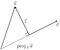
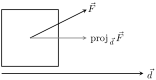

The previous section introduced vectors and described how to add them together and how to multiply them by scalars. This section introduces a multiplication on vectors called the dot product.
Let \(\vec u = \la u_1,u_2\ra\) and \(\vec v = \la v_1,v_2\ra\) in \(\mathbb{R}^2\text{.}\) The dot product of \(\vec u\) and \(\vec v\text{,}\) denoted \(\dotp uv\text{,}\) is
Let \(\vec u = \la u_1,u_2,u_3\ra\) and \(\vec v = \la v_1,v_2,v_3\ra\) in \(\mathbb{R}^3\text{.}\) The dot product of \(\vec u\) and \(\vec v\text{,}\) denoted \(\dotp uv\text{,}\) is
Note how this product of vectors returns a scalar, not another vector. We practice evaluating a dot product in the following example, then we will discuss why this product is useful.
Example11.3.3.Evaluating dot products.
Let \(\vec u=\la 1,2\ra\text{,}\)\(\vec v=\la 3,-1\ra\) in \(\mathbb{R}^2\text{.}\) Find \(\dotp uv\text{.}\)
Let \(\vec x = \la 2,-2,5\ra\) and \(\vec y = \la -1, 0, 3\ra\) in \(\mathbb{R}^3\text{.}\) Find \(\dotp xy\text{.}\)
The dot product, as shown by the preceding example, is very simple to evaluate. It is only the sum of products. While the definition gives no hint as to why we would care about this operation, there is an amazing connection between the dot product and angles formed by the vectors. Before stating this connection, we give a theorem stating some of the properties of the dot product.
Theorem11.3.4.Properties of the Dot Product.
Let \(\vec u\text{,}\)\(\vec v\) and \(\vec w\) be vectors in \(\mathbb{R}^2\) or \(\mathbb{R}^3\) and let \(c\) be a scalar.
\(\displaystyle c(\dotp uv) = (c\vec u)\cdot \vec v = \vec u \cdot (c\vec v)\)
\(\displaystyle \dotp 0v = 0\)
\(\displaystyle \dotp vv=\norm{\vec v}^2\)
The last statement of the theorem makes a handy connection between the magnitude of a vector and the dot product with itself. Our definition and theorem give properties of the dot product, but we are still likely wondering “What does the dot product mean?” It is helpful to understand that the dot product of a vector with itself is connected to its magnitude.
The next theorem extends this understanding by connecting the dot product to magnitudes and angles. Given vectors \(\vec u\) and \(\vec v\) in the plane, an angle \(\theta\) is clearly formed when \(\vec u\) and \(\vec v\) are drawn with the same initial point as illustrated in Figure 11.3.6.(a). (We always take \(\theta\) to be the angle in \([0,\pi]\) as two angles are actually created.)
Figure11.3.6.Illustrating the angle formed by two vectors with the same initial point
The same is also true of 2 vectors in space: given \(\vec u\) and \(\vec v\) in \(\mathbb{R}^3\) with the same initial point, there is a plane that contains both \(\vec u\) and \(\vec v\text{.}\) (When \(\vec u\) and \(\vec v\) are co-linear, there are infinitely many planes that contain both vectors.) In that plane, we can again find an angle \(\theta\) between them (and again, \(0\leq \theta\leq \pi\)). This is illustrated in Figure 11.3.6.(b).
The following theorem connects this angle \(\theta\) to the dot product of \(\vec u\) and \(\vec v\text{.}\)
Theorem11.3.7.The Dot Product and Angles.
Let \(\vec u\) and \(\vec v\) be nonzero vectors in \(\mathbb{R}^2\) or \(\mathbb{R}^3\text{.}\) Then
Note how on the left hand side of the equation, we are computing the dot product of two unit vectors. Recalling that unit vectors essentially only provide direction information, we can informally restate Theorem 11.3.7 as saying “The dot product of two directions gives the cosine of the angle between them.”
When \(\theta\) is an acute angle (i.e., \(0\leq \theta \lt \pi/2\)), \(\cos(\theta)\) is positive; when \(\theta = \pi/2\text{,}\)\(\cos(\theta) = 0\text{;}\) when \(\theta\) is an obtuse angle (\(\pi/2\lt \theta \leq \pi\)), \(\cos(\theta)\) is negative. Thus the sign of the dot product gives a general indication of the angle between the vectors, illustrated in Figure 11.3.9.
Figure11.3.9.Illustrating the relationship between the angle between vectors and the sign of their dot product
We can use Theorem 11.3.7 to compute the dot product, but generally this theorem is used to find the angle between known vectors (since the dot product is generally easy to compute). To this end, we rewrite the theorem's equation as
We practice using this theorem in the following example.
Example11.3.10.Using the dot product to find angles.
Let \(\vec u = \la 3,1\ra\text{,}\)\(\vec v = \la -2,6\ra\) and \(\vec w = \la -4,3\ra\text{,}\) as shown in Figure 11.3.11. Find the angles \(\alpha\text{,}\)\(\beta\) and \(\theta\text{.}\)
We see from our computation that \(\alpha + \beta = \theta\text{,}\) as indicated by Figure 11.3.11. While we knew this should be the case, it is nice to see that this non-intuitive formula indeed returns the results we expected.
We do a similar example next in the context of vectors in space.
Example11.3.12.Using the dot product to find angles.
Let \(\vec u = \la 1,1,1\ra\text{,}\)\(\vec v = \la -1,3,-2\ra\) and \(\vec w = \la -5,1,4\ra\text{,}\) as illustrated in Figure 11.3.13. Find the angle between each pair of vectors.
While our work shows that each angle is \(\pi/2\text{,}\) i.e., \(90^\circ\text{,}\) none of these angles looks to be a right angle in Figure 11.3.13. Such is the case when drawing three-dimensional objects on the page.
All three angles between these vectors was \(\pi/2\text{,}\) or \(90^\circ\text{.}\) We know from geometry and everyday life that \(90^\circ\) angles are “nice” for a variety of reasons, so it should seem significant that these angles are all \(\pi/2\text{.}\) Notice the common feature in each calculation (and also the calculation of \(\alpha\) in Example 11.3.10): the dot products of each pair of angles was 0. We use this as a basis for a definition of the term orthogonal, which is essentially synonymous to perpendicular.
Definition11.3.14.Orthogonal.
Nonzero vectors \(\vec u\) and \(\vec v\) are orthogonal if their dot product is 0.
Example11.3.15.Finding orthogonal vectors.
Let \(\vec u = \la 3,5\ra\) and \(\vec v = \la 1,2,3\ra\text{.}\)
Find two vectors in \(\mathbb{R}^2\) that are orthogonal to \(\vec u\text{.}\)
Find two non-parallel vectors in \(\mathbb{R}^3\) that are orthogonal to \(\vec v\text{.}\)
Recall that a line perpendicular to a line with slope \(m\) has slope \(-1/m\text{,}\) the “opposite reciprocal slope.” We can think of the slope of \(\vec u\) as \(5/3\text{,}\) its “rise over run.” A vector orthogonal to \(\vec u\) will have slope \(-3/5\text{.}\) There are many such choices, though all parallel:
\begin{equation*}
\la -5,3\ra \text{ or } \la 5,-3\ra \text{ or } \la -10,6\ra \text{ or } \la 15,-9\ra,\text{ etc. }
\end{equation*}
There are infinitely many directions in space orthogonal to any given direction, so there are an infinite number of non-parallel vectors orthogonal to \(\vec v\text{.}\) Since there are so many, we have great leeway in finding some. One way is to arbitrarily pick values for the first two components, leaving the third unknown. For instance, let \(\vec v_1 = \la 2,7,z\ra\text{.}\) If \(\vec v_1\) is to be orthogonal to \(\vec v\text{,}\) then \(\vec v_1\cdot\vec v = 0\text{,}\) so
\begin{equation*}
2+14+3z=0 \Rightarrow z = \frac{-16}{3}\text{.}
\end{equation*}
So \(\vec v_1 = \la 2, 7, -16/3\ra\) is orthogonal to \(\vec v\text{.}\) We can apply a similar technique by leaving the first or second component unknown. Another method of finding a vector orthogonal to \(\vec v\) mirrors what we did in part 1. Let \(\vec v_2 = \la-2,1,0\ra\text{.}\) Here we switched the first two components of \(\vec v\text{,}\) changing the sign of one of them (similar to the “opposite reciprocal” concept before). Letting the third component be 0 effectively ignores the third component of \(\vec v\text{,}\) and it is easy to see that
Clearly \(\vec v_1\) and \(\vec v_2\) are not parallel.
An important construction is illustrated in Figure 11.3.16, where vectors \(\vec u\) and \(\vec v\) are sketched. In Figure 11.3.16.(a), a dotted line is drawn from the tip of \(\vec u\) to the line containing \(\vec v\text{,}\) where the dotted line is orthogonal to \(\vec v\text{.}\) In Figure 11.3.16.(b), the dotted line is replaced with the vector \(\vec z\) and \(\vec w\) is formed, parallel to \(\vec v\text{.}\) It is clear by the diagram that \(\vec u = \vec w+\vec z\text{.}\) What is important about this construction is this: \(\vec u\) is decomposed as the sum of two vectors, one of which is parallel to \(\vec v\) and one that is perpendicular to \(\vec v\text{.}\) It is hard to overstate the importance of this construction (as we'll see in upcoming examples).
The vectors \(\vec w\text{,}\)\(\vec z\) and \(\vec u\) as shown in Figure 11.3.16.(b) form a right triangle, where the angle between \(\vec v\) and \(\vec u\) is labeled \(\theta\text{.}\) We can find \(\vec w\) in terms of \(\vec v\) and \(\vec u\text{.}\)
Figure11.3.16.Developing the construction of the orthogonal projection
We also know that \(\vec w\) is parallel to to \(\vec v\) ; that is, the direction of \(\vec w\) is the direction of \(\vec v\text{,}\) described by the unit vector \(\vec v/\norm{\vec v}\text{.}\) The vector \(\vec w\) is the vector in the direction \(\vec v/\norm{\vec v}\) with magnitude \(\norm{\vec u}\cos(\theta)\text{:}\)
Since this construction is so important, it is given a special name.
Definition11.3.17.Orthogonal Projection.
Let nonzero vectors \(\vec u\) and \(\vec v\) be given. The orthogonal projection of \(\vec u\) onto \(\vec v\text{,}\) denoted \(\proj uv\text{,}\) is
Example11.3.19.Computing the orthogonal projection.
Let \(\vec u= \la -2,1\ra\) and \(\vec v=\la 3,1\ra\text{.}\) Find \(\proj uv\text{,}\) and sketch all three vectors with initial points at the origin.
Let \(\vec w = \la 2,1,3\ra\) and \(\vec x = \la 1,1,1\ra\text{.}\) Find \(\proj wx\text{,}\) and sketch all three vectors with initial points at the origin.
Vectors \(\vec u\text{,}\)\(\vec v\) and \(\proj uv\) are sketched in Figure 11.3.20. Note how the projection is parallel to \(\vec v\text{;}\) that is, it lies on the same line through the origin as \(\vec v\text{,}\) although it points in the opposite direction. That is because the angle between \(\vec u\) and \(\vec v\) is obtuse (i.e., greater than \(90^\circ\)).
These vectors are sketched in Figure 11.3.21.(a), and again in Figure 11.3.21.(b) from a different perspective. Because of the nature of graphing these vectors, the sketch in Figure 11.3.21.(a) makes it difficult to recognize that the drawn projection has the geometric properties it should. The graph shown in Figure 11.3.21.(b) illustrates these properties better.
The above formula shows that the orthogonal projection of \(\vec u\) onto \(\vec v\) is only concerned with the direction of \(\vec v\text{,}\) as both instances of \(\vec v\) in the formula come in the form \(\vec v/\norm{\vec v}\text{,}\) the unit vector in the direction of \(\vec v\text{.}\)
A special case of orthogonal projection occurs when \(\vec v\) is a unit vector. In this situation, the formula for the orthogonal projection of a vector \(\vec u\) onto \(\vec v\) reduces to just \(\proj uv = (\vec u\cdot\vec v)\vec v\text{,}\) as \(\vec v\cdot\vec v = 1\text{.}\)
This gives us a new understanding of the dot product. When \(\vec v\) is a unit vector, essentially providing only direction information, the dot product of \(\vec u\) and \(\vec v\) gives “how much of \(\vec u\) is in the direction of \(\vec v\text{.}\)” This use of the dot product will be very useful in future sections.

Figure11.3.22.Illustrating the orthogonal projection
Now consider Figure 11.3.22 where the concept of the orthogonal projection is again illustrated. It is clear that
\begin{equation}
\vec u = \proj uv + \vec z\text{.}\tag{11.3.2}
\end{equation}
As we know what \(\vec u\) and \(\proj uv\) are, we can solve for \(\vec z\) and state that
\begin{equation*}
\vec z = \vec u - \proj uv\text{.}
\end{equation*}
This leads us to rewrite Equation (11.3.2) in a seemingly silly way:
\begin{equation*}
\vec u = \proj uv + (\vec u - \proj uv)\text{.}
\end{equation*}
This is not nonsense, as pointed out in the following Key Idea. (Notation note: the expression “\(\parallel \vec y\)” means “is parallel to \(\vec y\text{.}\)” We can use this notation to state “\(\vec x\parallel\vec y\)” which means “\(\vec x\) is parallel to \(\vec y\text{.}\)” The expression “\(\perp \vec y\)” means “is orthogonal to \(\vec y\text{,}\)” and is used similarly.)
Key Idea11.3.23.Orthogonal Decomposition of Vectors.
Let nonzero vectors \(\vec u\) and \(\vec v\) be given. Then \(\vec u\) can be written as the sum of two vectors, one of which is parallel to \(\vec v\text{,}\) and one of which is orthogonal to \(\vec v\text{:}\)
We illustrate the use of this equality in the following example.
Example11.3.24.Orthogonal decomposition of vectors.
Let \(\vec u = \la -2,1\ra\) and \(\vec v = \la 3,1\ra\) as in Example 11.3.19. Decompose \(\vec u\) as the sum of a vector parallel to \(\vec v\) and a vector orthogonal to \(\vec v\text{.}\)
Let \(\vec w =\la 2,1,3\ra\) and \(\vec x =\la 1,1,1\ra\) as in Example 11.3.19. Decompose \(\vec w\) as the sum of a vector parallel to \(\vec x\) and a vector orthogonal to \(\vec x\text{.}\)
Since the dot product is 0, we know the two vectors are orthogonal. We now write \(\vec w\) as the sum of two vectors, one parallel and one orthogonal to \(\vec x\text{:}\)
We give an example of where this decomposition is useful.
Example11.3.25.Orthogonally decomposing a force vector.
Consider Figure 11.3.26.(a), showing a box weighing 50lb on a ramp that rises 5ft over a span of 20ft. Find the components of force, and their magnitudes, acting on the box (as sketched in Figure 11.3.26.(b)):
(a)
(b)
Figure11.3.26.Sketching the ramp and box in Example 11.3.25. Note: The vectors are not drawn to scale.
As the ramp rises 5ft over a horizontal distance of 20ft, we can represent the direction of the ramp with the vector \(\vec r= \la 20,5\ra\text{.}\) Gravity pulls down with a force of 50lb, which we represent with \(\vec g = \la 0,-50\ra\text{.}\)
To find the force of gravity in the direction of the ramp, we compute \(\proj gr\text{:}\)
The magnitude of \(\proj gr\) is \(\norm{\proj gr} = 50/\sqrt{17} \approx 12.13\text{ lb }\text{.}\) Though the box weighs 50lb, a force of about 12lb is enough to keep the box from sliding down the ramp.
To find the component \(\vec z\) of gravity orthogonal to the ramp, we use Key Idea 11.3.23.
\begin{align*}
\vec z \amp = \vec g - \proj gr\\
\amp = \la \frac{200}{17},-\frac{800}{17}\ra \approx \la 11.76,-47.06\ra\text{.}
\end{align*}
The magnitude of this force is \(\norm{\vec z} \approx 48.51\)lb. In physics and engineering, knowing this force is important when computing things like static frictional force. (For instance, we could easily compute if the static frictional force alone was enough to keep the box from sliding down the ramp.)
Subsection11.3.1Application to Work
In physics, the application of a force \(F\) to move an object in a straight line a distance \(d\) produces work; the amount of work \(W\) is \(W=Fd\text{,}\) (where \(F\) is in the direction of travel). The orthogonal projection allows us to compute work when the force is not in the direction of travel.

Figure11.3.27.Finding work when the force and direction of travel are given as vectors
Consider Figure 11.3.27, where a force \(\vec F\) is being applied to an object moving in the direction of \(\vec d\text{.}\) (The distance the object travels is the magnitude of \(\vec d\text{.}\)) The work done is the amount of force in the direction of \(\vec d\text{,}\)\(\norm{\proj Fd}\text{,}\) times \(\vnorm d\text{:}\)
The expression \(\dotp Fd\) will be positive if the angle between \(\vec F\) and \(\vec d\) is acute; when the angle is obtuse (hence \(\dotp Fd\) is negative), the force is causing motion in the opposite direction of \(\vec d\text{,}\) resulting in “negative work.” We want to capture this sign, so we drop the absolute value and find that \(W = \dotp Fd\text{.}\)
Definition11.3.28.Work.
Let \(\vec F\) be a constant force that moves an object in a straight line from point \(P\) to point \(Q\text{.}\) Let \(\vec d = \overrightarrow{PQ}\text{.}\) The work \(W\) done by \(\vec F\) along \(\vec d\) is \(W = \dotp Fd\text{.}\)
Example11.3.29.Computing work.
A man slides a box along a ramp that rises 3ft over a distance of 15ft by applying 50lb of force as shown in Figure 11.3.30. Compute the work done.
Figure11.3.30.Computing work when sliding a box up a ramp in Example 11.3.29
The figure indicates that the force applied makes a \(30^\circ\) angle with the horizontal, so \(\vec F = 50\la \cos(30^\circ) ,\sin(30^\circ) \ra \approx \la 43.3,25\ra\text{.}\) The ramp is represented by \(\vec d = \la 15,3\ra\text{.}\) The work done is simply
Note how we did not actually compute the distance the object traveled, nor the magnitude of the force in the direction of travel; this is all inherently computed by the dot product!
The dot product is a powerful way of evaluating computations that depend on angles without actually using angles. The next section explores another “product” on vectors, the cross product. Once again, angles play an important role, though in a much different way.
Exercises11.3.2Exercises
Terms and Concepts
1.
The dot product of two vectors is a , not a vector.
2.
How are the concepts of the dot product and vector magnitude related?
3.
How can one quickly tell if the angle between two vectors is acute or obtuse?
4.
Give a synonym for “orthogonal.”
Problems
Exercise Group.
In the following exercises, find the dot product of the given vectors.
5.
\(\vec u = \la 2,-4\ra\text{,}\)\(\vec v = \la 3,7\ra\)
\(\vec u \cdot\vec v=\)
6.
\(\vec u = \la 5,3\ra\text{,}\)\(\vec v = \la 6,1\ra\)
\(\vec u \cdot\vec v=\)
7.
\(\vec u = \la 1,-1,2\ra\text{,}\)\(\vec v = \la 2,5,3\ra\)
\(\vec u \cdot\vec v=\)
8.
\(\vec u = \la 3,5,-1\ra\text{,}\)\(\vec v = \la 4,-1,7\ra\)
\(\vec u \cdot\vec v=\)
9.
\(\vec u = \la 1,1\ra\text{,}\)\(\vec v = \la 1,2,3\ra\)
10.
\(\vec u = \la 1,2,3\ra\text{,}\)\(\vec v = \la 0,0,0\ra\)
\(\vec u \cdot\vec v=\)
11.
Create your own vectors \(\vec u\text{,}\)\(\vec v\) and \(\vec w\) in \(\mathbb{R}^2\) and show that \(\vec u\cdot (\vec v+\vec w) = \vec u\cdot \vec v + \vec u\cdot \vec w\text{.}\)
12.
Create your own vectors \(\vec u\) and \(\vec v\) in \(\mathbb{R}^3\) and scalar \(c\) and show that \(c(\vec u\cdot \vec v) = \vec u\cdot (c\vec v)\text{.}\)
Exercise Group.
In the following exercises, find the measure of the angle between the two vectors in both radians and degrees.
13.
The angle between \(\vec u = \la 1,1\ra\) and \(\vec v = \la 1,2\ra\) is .
14.
The angle between \(\vec u = \la -2,1\ra\) and \(\vec v = \la 3,5\ra\) is .
15.
The angle between \(\vec u = \la 8,1,-4\ra\) and \(\vec v = \la 2,2,0\ra\) is .
16.
The angle between \(\vec u = \la 1,7,2\ra\) and \(\vec v = \la 4,-2,5\ra\) is .
Exercise Group.
In the following exercises, a vector \(\vec v\) is given. Give two vectors that are orthogonal to \(\vec v\text{.}\)
17.
Find two nonzero vectors orthogonal to \(\vec v = \la 4,7\ra\text{.}\)
and
18.
Find two nonzero vectors orthogonal to \(\vec v = \la -3,5\ra\text{.}\)
and
19.
Find two nonzero vectors orthogonal to \(\vec v = \la 1,1,1\ra\text{.}\)
and
20.
Find two nonzero vectors orthogonal to \(\vec v = \la 1,-2,3\ra\text{.}\)
and
Exercise Group.
In the following exercises, vectors \(\vec u\) and \(\vec v\) are given. Find \(\proj uv\text{,}\) the orthogonal projection of \(\vec u\) onto \(\vec v\text{,}\) and sketch all three vectors with the same initial point.
21.
If \(\vec u = \la 1,2\ra\) and \(\vec v = \la -1,3\ra\text{,}\) then \(\proj uv=\).
Sketch all three vectors on the same axes.
22.
If \(\vec u = \la 5,5\ra\) and \(\vec v = \la 1,3\ra\text{,}\) then \(\proj uv=\).
Sketch all three vectors on the same axes.
23.
If \(\vec u = \la -3,2\ra\) and \(\vec v = \la 1,1\ra\text{,}\) then \(\proj uv=\).
Sketch all three vectors on the same axes.
24.
If \(\vec u = \la -3,2\ra\) and \(\vec v = \la 2,3\ra\text{,}\) then \(\proj uv=\).
Sketch all three vectors on the same axes.
25.
If \(\vec u = \la 1,5,1\ra\) and \(\vec v = \la 1,2,3\ra\text{,}\) then \(\proj uv=\).
Sketch all three vectors on the same axes.
26.
If \(\vec u = \la 3,-1,2\ra\) and \(\vec v = \la 2,2,1\ra\text{,}\) then \(\proj uv=\).
Sketch all three vectors on the same axes.
Exercise Group.
In the following exercises, vectors \(\vec u\) and \(\vec v\) are given. Write \(\vec u\) as the sum of two vectors, one of which is parallel to \(\vec v\) (or is zero) and one of which is orthogonal to \(\vec v\text{.}\) Note: these are the same pairs of vectors as found in Exercises 11.3.2.21 — Exercise 11.3.2.26.
27.
Write \(\vec u = \la 1,2\ra\) as the sum of two vectors, one parallel to \(\vec v = \la -1,3\ra\) (or zero) and the other perpendicular.
\(\vec u=\)\({}+{}\)
28.
Write \(\vec u = \la 5,5\ra\) as the sum of two vectors, one parallel to \(\vec v = \la 1,3\ra\) (or zero) and the other perpendicular.
\(\vec u=\)\({}+{}\)
29.
Write \(\vec u = \la -3,2\ra\) as the sum of two vectors, one parallel to \(\vec v = \la 1,1\ra\) (or zero) and the other perpendicular.
\(\vec u=\)\({}+{}\)
30.
Write \(\vec u = \la -3,2\ra\) as the sum of two vectors, one parallel to \(\vec v = \la 2,3\ra\) (or zero) and the other perpendicular.
\(\vec u=\)\({}+{}\)
31.
Write \(\vec u = \la 1,5,1\ra\) as the sum of two vectors, one parallel to \(\vec v = \la 1,2,3\ra\) (or zero) and the other perpendicular.
\(\vec u=\)\({}+{}\)
32.
Write \(\vec u = \la 3,-1,2\ra\) as the sum of two vectors, one parallel to \(\vec v = \la 2,2,1\ra\) (or zero) and the other perpendicular.
\(\vec u=\)\({}+{}\)
33.
A 10lb box sits on a ramp that rises 4ft over a distance of 20ft. How much force is required to keep the box from sliding down the ramp?
34.
A 10lb box sits on a 15ft ramp that makes a \(30^\circ\) angle with the horizontal. How much force is required to keep the box from sliding down the ramp?
35.
How much work is performed in moving a box horizontally 10ft with a force of 20lb applied at an angle of \(45^\circ\) to the horizontal?
36.
How much work is performed in moving a box horizontally 10ft with a force of 20lb applied at an angle of \(10^\circ\) to the horizontal?
37.
How much work is performed in moving a box up the length of a ramp that rises 2ft over a distance of 10ft, with a force of 50lb applied horizontally?
38.
How much work is performed in moving a box up the length of a ramp that rises 2ft over a distance of 10ft, with a force of 50lb applied at an angle of \(45^\circ\) to the horizontal?
39.
How much work is performed in moving a box up the length of a 10ft ramp that makes a \(5^\circ\) angle with the horizontal, with 50lb of force applied in the direction of the ramp?